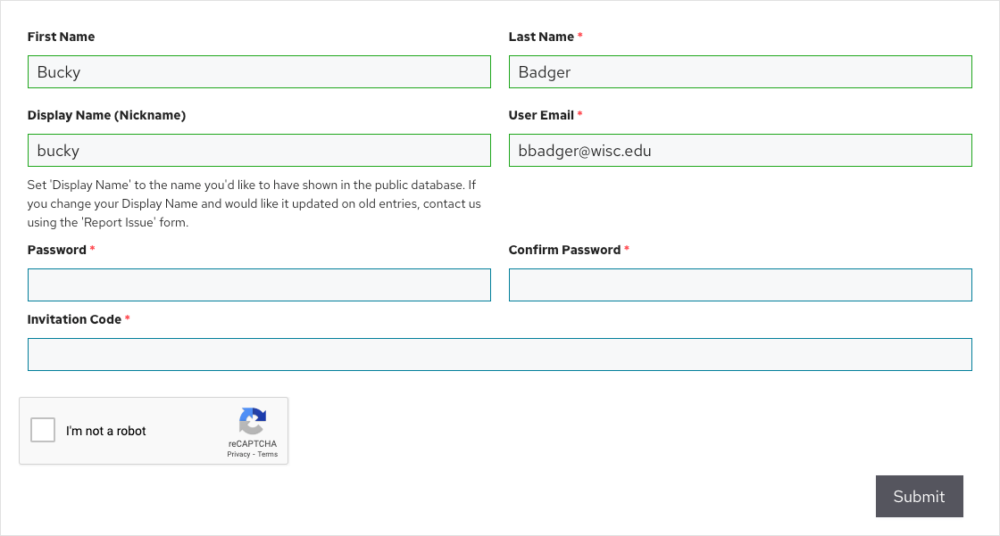

Getting Started
To get started, you will need to create an account on the Discovery Database.
- Visit https://notebook.tinyearth.wisc.edu/registration/
- Complete the form, filling in your name, display name, and email. Create a password you will use to log into the database, and input the Invitation Code you were given by your instructor
- Submit the form and await an activation email
- Click the link in the activation email to finish creating your account
- Visit https://notebook.tinyearth.wisc.edu/ and log in – let's begin!
